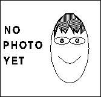

Efficient parallel radiosity solver
|
|
SSP Project Summary: Efficient parallel radiosity solver |
|
|
|
Radiosity uses an energy balance approach to generating realistic images of a scene. The scene is divided into a number of small patches. The fraction of energy (light) leaving each patch for all other patches is computed. These are termed form factors. From the starting conditions and the form factors a set of simultaneous equations is derived. Solving this provides an energy level at each patch which approximates the intensity that is observed. The result is view-point independent.
A method know as progressive refinement may be used to converge on the result without the need to store the entire matrix. This method identifies the patch with the largest excess energy and distributes that energy. This is repeated until the unshot energy at any patch falls below a preset threshold.
Research effort concentrated on progressive refinement radiosity has primarily focused on extending the realism by the introduction of specular components. These increase the required rendering time and often make the process view dependent. For example extended form factors compute the contribution from one patch to another of the energy which has been specularly reflected by an intermediate patch.
A simple progressive radiosity solver which uses the hemi-cube method of form-factor determination will be provided. The primary objective of the project will be to evaluate possible approaches to parallelisation of this software, and to implement one or more of the approaches.
It is expected the parallelisation work would use MPI.
The goal is not to produce complete realism, but to get acceptable results as efficiently as possible.
 Alexander Brodsky worked on this project.
Compressed PostScript of the project's final report will be available here (167 kbytes) .
 Webpage maintained by
mario@epcc.ed.ac.uk
Webpage maintained by
mario@epcc.ed.ac.uk
|